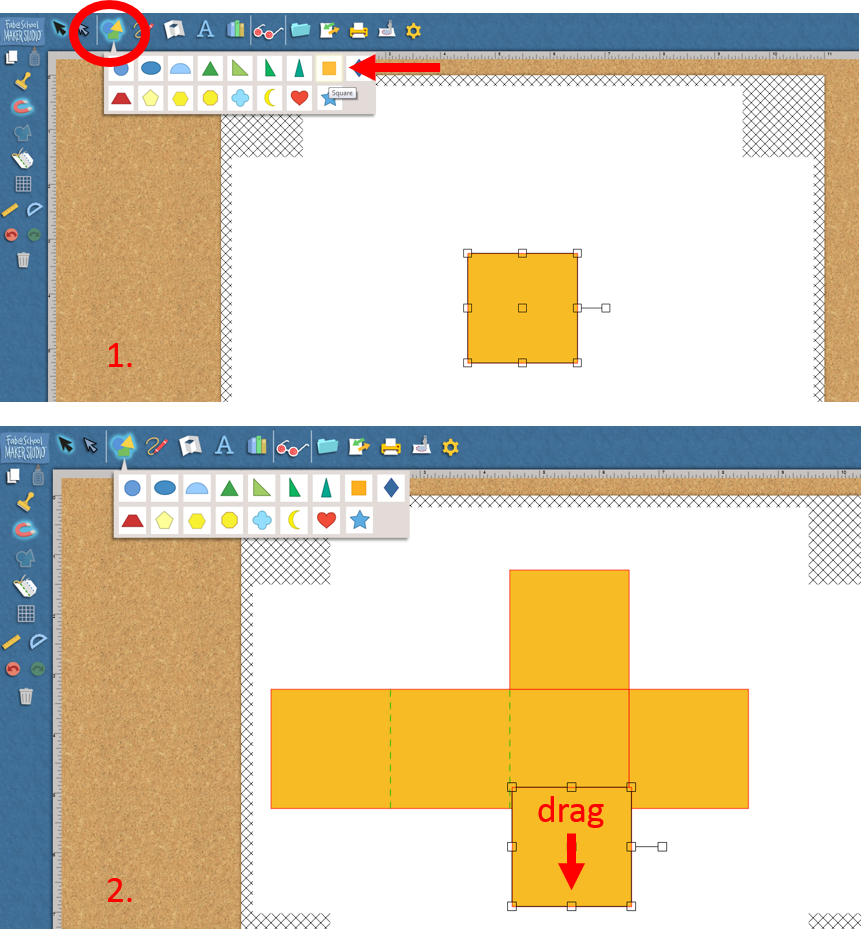
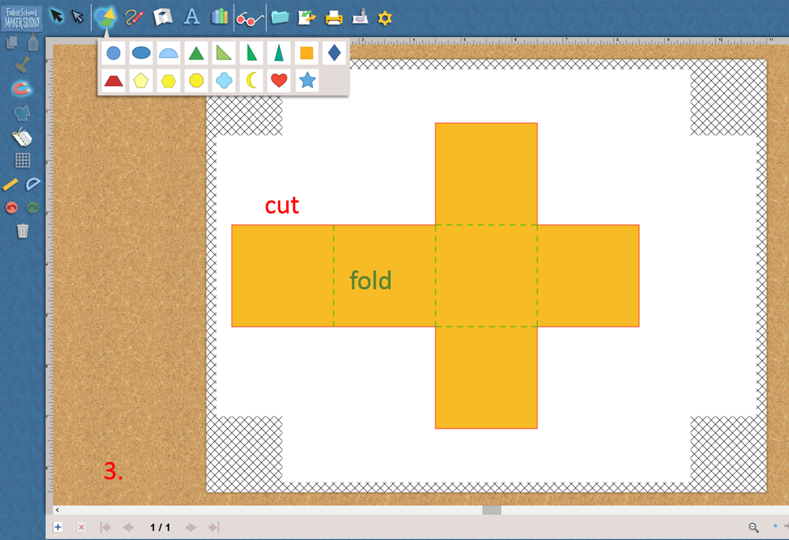

Do It! FabMaker Studio: Design Geometric Nets
 The Challenge
The Challenge
Your challenge is to use FabMaker Studio to design a geometric net and build a 3D shape. Then, determine the volume of your 3D shape by counting unit cubes.
Project Steps
-
Build a Geometric Net
-
Print and Construct Your Geometric Net
-
Solve for Volume
Build a Geometric Net
Think about the 2D shapes that make up your geometric net.
- Select a square or rectangle to use as the base shape in your geometric net. A 3D cube is made up of six 2D squares. The final 3D shape will be a rectangular prism or cube.
- Drag the shapes into place.
- A red, solid line will show you where to cut. A green, dotted line will show you where to fold your geometric net. If you do not see a red or green line, keep dragging your shape into place.
- If you make a mistake you can use the trash can button to undo your work or start over.


If you get stuck, check out the tutorials on the FabMaker Studio website.
Print and Construct Your Geometric Net
To print your geometric net:
- Click on the print button.
- Select the options for Print Cut & Fold Lines and Remove Color Fill.
- Click Save to PDF.
- Open the PDF and print to a printer in your classroom or school.
To construct your geometric net:
- Use scissors to cut out the geometric net along the red, solid lines.
- Fold your geometric net along the green, dotted lines.
- Tape or glue your 3D shape together.
Solve for Volume
Find the volume of your shape. You and your partner should do your own calculations and compare the results when complete.
- After you have printed and constructed your shape, use a ruler to measure your shape.
- Measure the shape in inches or centimeters.
- Measure the shape’s height.
- Measure the shape’s width.
- Measure the shape’s depth.
- In order to help you, you can draw grid lines on your shape. You will draw a line at each inch or centimeter mark. Then, count the unit cubes to figure out the object’s measurements.

- Find the volume of your shape. Calculate the shape’s volume by multiplying length × height × width. The volume should be the same as the number of unit cubes. Be sure to use the correct units: in3 or cm3.
- Find the volume of the shape, this time using a non-standard unit. You can do this by using the tip of your finger, a coin, a pencil eraser, etc. Lay the object on the edge of your shape. Mark the end of the object, and then move it to the end mark. Continue to do so until you have measured all the way across. Measure the object’s length, width, and height using your non-standard unit. Multiply length × height × width to find the volume. Be sure to identify your non-standard unit (for example, pennies3).